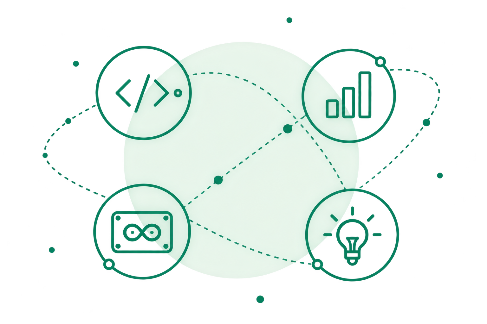
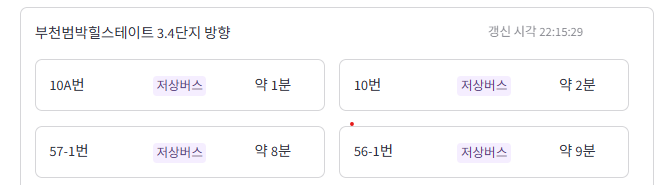

질문에서 시작합니다
무엇을 해결하고 싶은지 먼저 생각하도록 돕습니다.
M.K. · SOFTWARE EDUCATION
처음 코딩을 접하는 학생에게는 작은 결과물 하나도 소중한 시작이라고 생각합니다. 학생들이 자기 속도로 시도하고, 스스로 해냈다는 기쁨을 느낄 수 있도록 곁에서 돕고 싶습니다.

1. TEACHING PHILOSOPHY
아는 것에서 좋아하는 것으로, 좋아하는 것에서 즐기는 것으로.
학생이 개념을 이해하는 데서 출발해 직접 만들며 흥미를 발견하고, 스스로 다시 시도하고 싶어지는 수업을 설계합니다.
무엇을 해결하고 싶은지 먼저 생각하도록 돕습니다.
개념을 배운 뒤 바로 작은 결과물을 만들며 배운 내용을 확인합니다.
같은 주제라도 학습자에 따라 도구와 예제, 진행 속도를 조절합니다.
코드, 데이터, 센서, 화면을 연결해 재미있게 작동시켜 봅니다.
2. WHAT I TEACH
실습과 프로젝트로 이어질 수 있도록 주제를 연결합니다.
학생들이 직접 코드를 실행하고 결과를 확인하며 프로그래밍의 원리를 이해하도록 돕습니다.
학생들의 일상과 가까운 주제로 질문을 만들고, 데이터를 살펴보며 근거를 찾는 활동을 설계합니다.
학생들이 연결과 코드를 하나씩 바꿔 보며 원리를 이해하고, 주변의 작은 불편을 해결하는 작품으로 발전시키도록 돕습니다.
처음 배우는 학생도 아이디어를 표현할 수 있도록 학습 수준과 활동 목적에 맞는 도구를 선택합니다.
3. MY TINY PROJECTS
과제와 개인 학습으로 익힌 기술을 직접 적용한 프로젝트입니다. 아이디어를 구현하고 문제를 해결하며 쌓은 경험을 담았습니다.
전광판 웹앱, Arduino 버스정류장

4. TEACHING RECORD
학교 수업과 교사 연수 현장에서 AI, 데이터, 코딩을 가르치며 쌓아 온 경험입니다.
개발 실무에서 배운 설계와 디버깅 경험을 프로젝트 수업의 문제 해결 과정에 활용합니다.